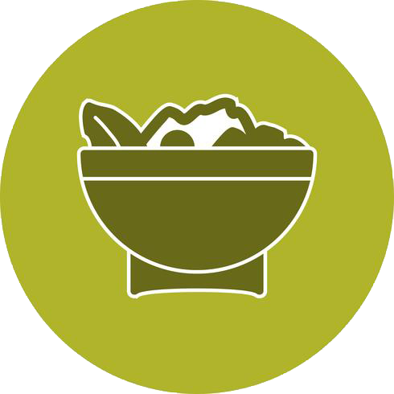
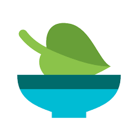
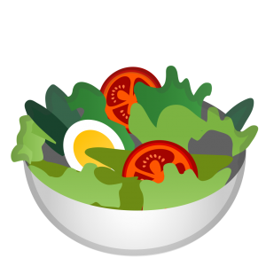

<ion-header>
  <ion-toolbar color="dark">

    <div class="div2">
      <ion-title></ion-title>
    </div>

    <ion-icon slot="end" name="cart" class="css"></ion-icon>
    <ion-icon slot="end" name="search" class="css"></ion-icon>


    <ion-buttons slot="end">
      <ion-menu-button></ion-menu-button>
    </ion-buttons>

    <ion-icon (click)="Home()" slot="start" name="arrow-back" class="css"></ion-icon>
    <ion-icon slot="start" name="contact" class="css"></ion-icon>


  </ion-toolbar>

  <ion-slides pager="true" autoplay="true" style="width: 300px; height: 200px;" [options]="slideOpts">
    <ion-slide>
      <ion-img src="../assets/imagens/vg1.jpg"></ion-img>
      <h5 class="ion-slide">Cardápio, vegetariano para o dia a dia</h5>

    </ion-slide>

    <ion-slide>
      <ion-img src="../assets/imagens/vg2.jpg"></ion-img>
    </ion-slide>

    <ion-slide>
      <ion-img src="../assets/imagens/vg3.jpg"></ion-img>
    </ion-slide>

    <ion-slide>
      <ion-img src="../assets/imagens/vg4.jpg"></ion-img>
    </ion-slide>

    <ion-slide>
      <ion-img src="../assets/imagens/vg6.jpg"></ion-img>
    </ion-slide>

  </ion-slides>
  <ion-searchbar></ion-searchbar>


</ion-header>


<ion-content>

  <ion-tabs>
    <ion-tab-bar slot="top">
      <ion-tab-button (click)="PratoView()">

        
        <ion-label>BaixaCaloria</ion-label>

      </ion-tab-button>

      <ion-tab-button (click)="viewPratoVegano()">
        
        <ion-label>Vegano</ion-label>
      </ion-tab-button>

      <ion-tab-button (click)="viewPratoVegetariano()">
        
        <ion-label>Vegetariano</ion-label>
        <ion-progress-bar></ion-progress-bar>
      </ion-tab-button>

    </ion-tab-bar>


  </ion-tabs>
  <ion-grid>
    <ion-row>

      <ion-col size="6" *ngFor="let pratovegetariano of  ListaDePratosVegetariano">
        <ion-card>
          <ion-card-header>
            
            <ion-card-title class="titleconfig">{{pratovegetariano?.nome}}</ion-card-title>
            <ion-card-subtitle>{{pratovegetariano?.descricao}}</ion-card-subtitle>
            <ion-card-subtitle>{{pratovegetariano?.valor}}</ion-card-subtitle>

          </ion-card-header>

          <div>
            <ion-button (click)="addCarrinho(prato)" color="dark">
              <ion-icon slot="end" name="cart" class="css"></ion-icon>Pedido
            </ion-button>
          </div>

          <ion-icon name="share-alt" (click)="ViewPratoVegetariano(pratovegetariano)" size="large"></ion-icon>
          <ion-icon name="trash" (click)="remove(pratovegetariano)" size="large"></ion-icon>


        </ion-card>

      </ion-col>


    </ion-row>

  </ion-grid>


</ion-content>